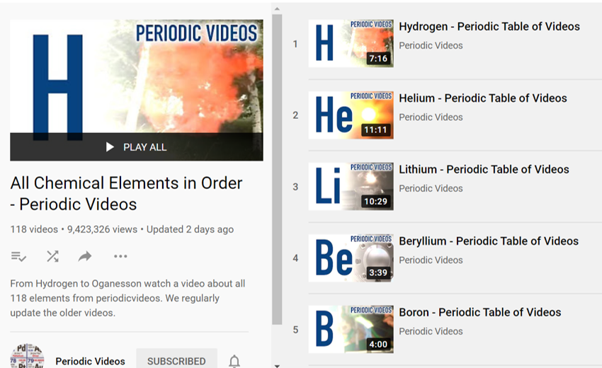
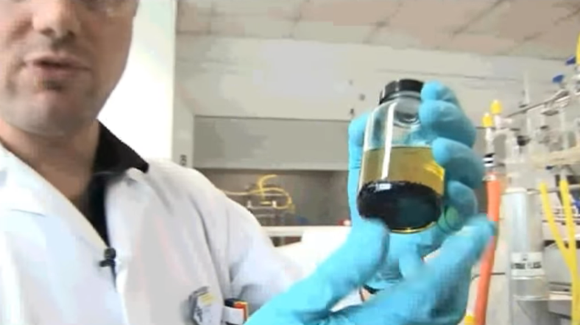

Description: The University of Nottingham has worked with Brady Haran, the videographer behind YouTube channels such as Numberphile and Computerphile, to produce 118 videos about the 118 known elements of the periodic table. Learn about each element's properties, history, applications, existence in certain compounds, and uses in chemistry lab experiments.

Quote: "N3- is potentially a very unstable anion. If you heat it, it can turn to nitrogen gas. N2 has a very strong bond between the two nitrogen atoms, so it releases a lot of energy."